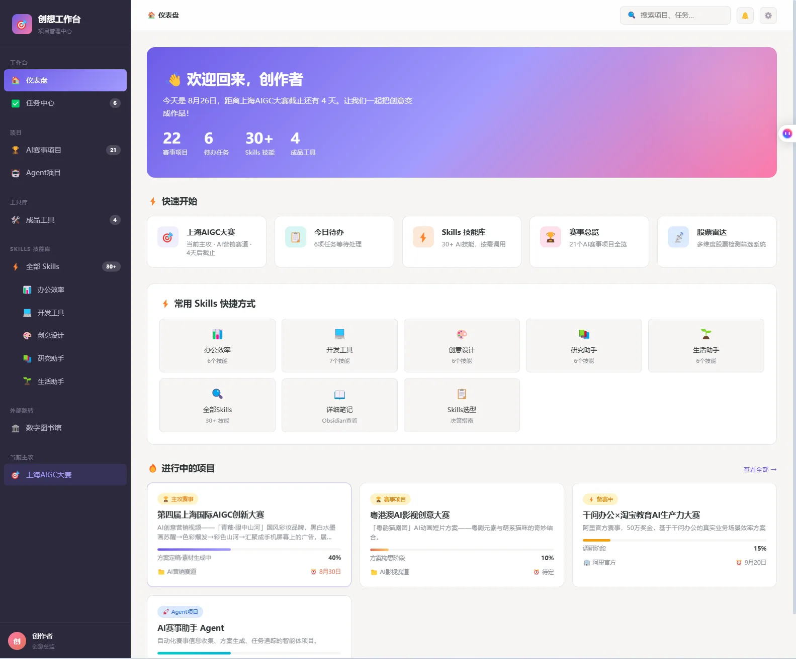

UI & Systems / PROJECT 05
AI-Native Creative Workspace
把工具、Skills 与项目组织成日常工作流
不再只收藏工具链接，而是把创作项目、任务、Skills 与 Agent 入口连到具体的下一步。
- ROLE
- 个人工作流、信息架构与界面设计
- TIME
- 项目年份待确认
- TOOLS
- Projects、AI tools、Skills 与 Agents 的工作流组织；技术栈未记录
- TYPE
- Personal creative system
- STATUS
- Private Prototype / Local Deployment

01 / OVERVIEW
Overview
从管理自己的创作项目出发，我搭建了「创想工作台」。它将项目、任务、AI 赛事与 Agent 项目，以及常用工具和 Skills 入口集中在一个工作界面，通过仪表盘梳理待办、项目进展与截止时间，让分散的创作事项有一个清晰的归处。
02 / PROBLEM
Problem
创作项目的想法、资料、待办和工具容易散落在不同位置；工具很多，并不意味着知道此刻应该做什么。
03 / OBSERVATION / INSIGHT
Observation / Insight
AI-native 工作台的价值不在工具清单，而在让能力围绕项目与任务被调用。该判断来自个人创作需求和已有界面结构，不冒充团队调研。
04 / DESIGN GOAL
Design Goal
把项目目标、任务状态、截止时间与可用能力放进可理解的工作流；让回到项目时能找到下一步。
05 / AI OPPORTUNITY
AI Opportunity
AI tools、Skills 和 Agent 项目已经作为可组织的界面对象出现。自动调度、跨工具执行、权限和运行记录属于进一步设计与验证范围，不在截图上推定已完成。
06 / USER FLOW
User Flow
从入口到完成任务，保留最短、可以解释的操作链路。
- 01明确项目目标
- 02整理任务与期限
- 03选择工具或 Skill
- 04执行与保存产出
- 05回到项目继续迭代
依据现有项目资料整理的流程图，不代表另行开展了用户访谈或行为研究。
07 / INFORMATION ARCHITECTURE
Information Architecture
把核心对象、操作和反馈分别组织，避免功能堆叠掩盖主要任务。
项目中心
- AI 赛事
- Agent 项目
- 进度与截止时间
工具与能力
- 成品工具
- 办公效率 Skills
- 开发与创意 Skills
个人工作流
- 待办摘要
- 快速开始
- 数字图书馆入口
08 / EXPLORATION
Exploration
区分项目容器、任务动作与工具入口，避免把它们混成同一张卡片；按办公、开发与创意分类 Skills，并保留知识资料入口。
09 / PROTOTYPE
Prototype
Private Prototype / Local Deployment。当前以已有界面截图说明设计，不提供未公开的原型服务。
10 / AI WORKFLOW
AI Workflow
把人的设计判断与 AI 可以辅助的工作分开说明。
Human directs.
- 拆解目标与优先级
- 选择工具与技能
- 审阅、归档并迭代产出
AI assists.
- 作为可选能力进入任务
- 自动执行属于待验证范围
- 工具输出必须回到项目上下文
11 / BUILD / VIBE CODING
Build / Vibe Coding
展示已提供的工作台截图与基于截图整理的架构。没有公开的运行环境或代码材料，因此不生成假 Demo，也不宣称完成多 Agent 编排。
12 / TESTING
Testing
未提供端到端运行录屏或正式可用性测试记录。建议下一步检查从创建任务到选择能力、找到产出的完整路径，并记录需要人工接手的节点。
13 / ITERATION
Iteration
本轮将“项目管理中心”的案例表达重新定位为 AI-native 创作工作流；这是作品叙事与信息结构整理，不是已完成后台升级的声明。
14 / OUTCOME
Outcome
建立以项目为中心、连接任务与 AI 能力的个人工作台表达；成果为已有界面及可审阅的工作流与信息架构。
15 / REFLECTION
Reflection
需要让人看见 Agent 在做什么、结果存在哪里、什么时候需要确认。只有运行记录能支持自动化能力的声明，工具数量不能。
CONTINUE EXPLORING